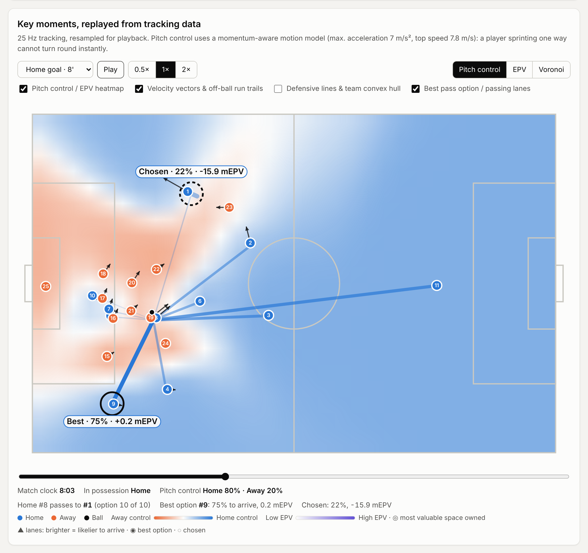
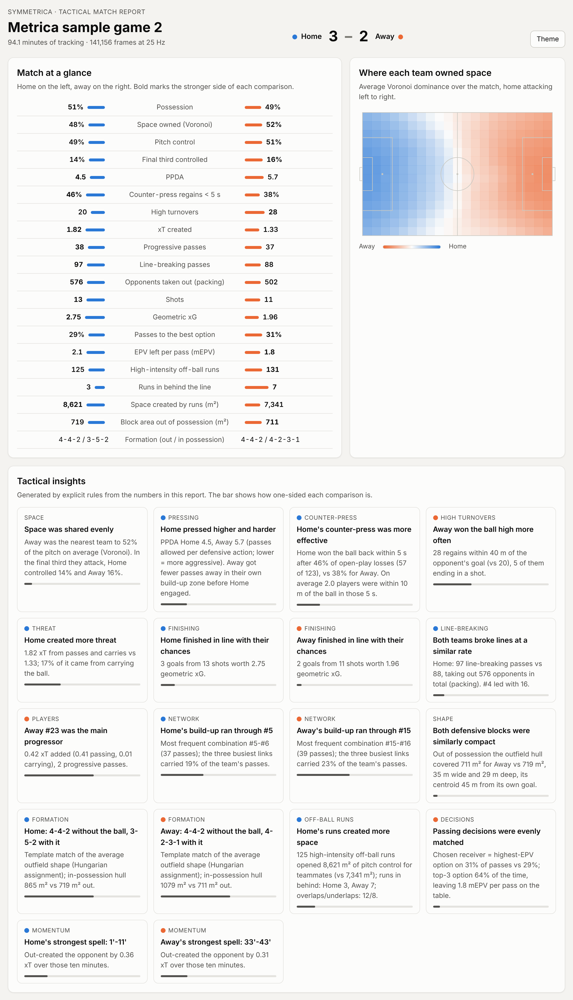
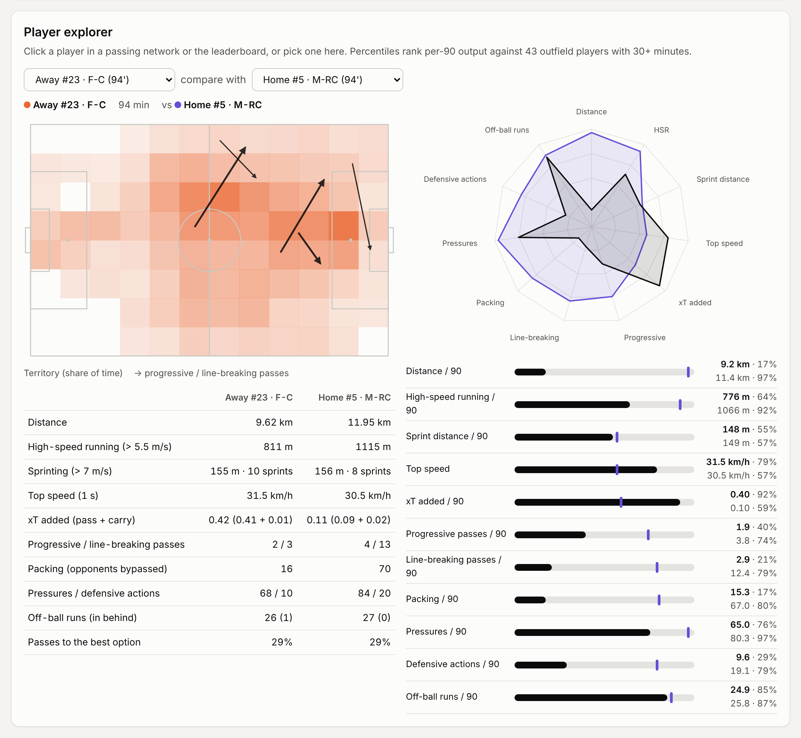
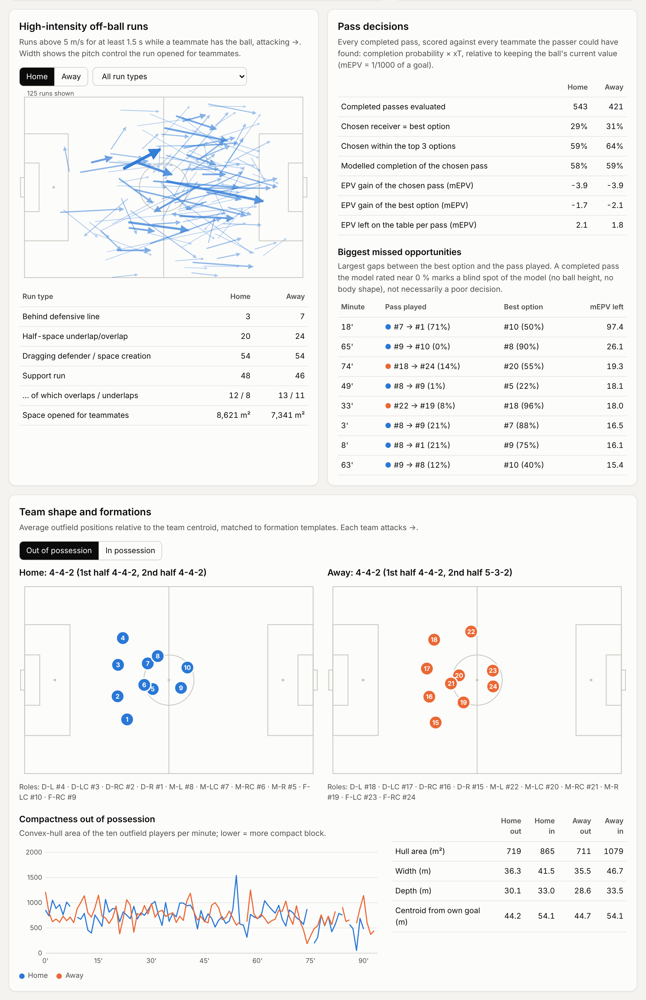

Tactical analytics from football tracking data.
Momentum-aware pitch control, expected possession value, pressing, off-ball runs, team shape and player scouting, computed from 25 Hz tracking and event data and delivered as interactive, self-contained match reports.

Explore the matches
Two full matches of open Metrica Sports data. Each report runs entirely in the browser, with no server and no tracking scripts.
Metrica sample game 1
Home3–0Away
| 52% | Possession | 48% |
| 6.7 | PPDA | 5.2 |
| 2.73 | xT created | 0.76 |
| 4-4-2 | Defensive shape | 5-3-2 |
| 221 | Off-ball runs | 139 |
Open the interactive report →
Metrica sample game 2
Home3–2Away
| 51% | Possession | 49% |
| 4.5 | PPDA | 5.7 |
| 1.82 | xT created | 1.33 |
| 4-4-2 | Defensive shape | 4-4-2 |
| 125 | Off-ball runs | 131 |
Open the interactive report →
What is inside each report
Replays with four layersPitch control or EPV heatmap, velocity vectors and run trails, convex hulls and defensive lines, and every pass option against the one chosen.
Physics-based pitch controlArrival times under bounded acceleration (7 m/s²): a sprinting player cannot turn round instantly.
Expected possession valuePitch control × expected threat: the dangerous space the team in possession owns right now.
Pass decisionsCompletion probability and EPV gain of all ten teammates at every pass, against the receiver actually chosen.
Off-ball runsHigh-intensity runs in behind, overlaps and underlaps, dragged markers, and the space each run opened (counterfactual pitch control).
Shape and formationHull area, block width and depth, line height, and formations in and out of possession by template matching.
PressingPPDA, counter-press regains within 5 s, high turnovers and pressure on the ball.
Player explorerPhysical load, xT, line-breaking passes, packing and runs, with territory, pass maps, radar and percentile comparison.
A look inside


